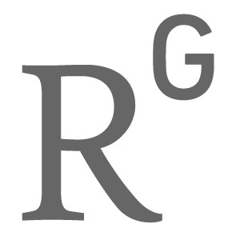
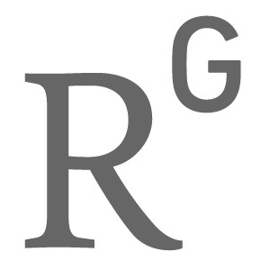

My name is Rajesh Singh. I am a postdoc in the group of Professor Michael E. Cates at the Department of Applied Mathematics and Theoretical Physics (DAMTP) at the University of Cambridge. Prior to this, I have completed my PhD in theoretical physics, working under the supervision of Professor Ronojoy Adhikari at the Institute of Mathematical Sciences, Chennai. Read more in my CV.
Education
| 2012-18 | PhD, The Institute of Mathematical Sciences, Chennai |
| 2010-12 | MSc, Indian Institute of Technology, Kanpur |
| 2007-10 | BSc, Hindu College, University of Delhi |
Publications
Generalized Stokes laws for active colloids and their applications
R. Singh and R. Adhikari, J. Phys. Commun. 2, 025025, 2018 | arXiv:1603.05735
Boundaries determine the collective dynamics of self-propelled particles
S. Thutupalli, D. Geyer, R. Singh, R. Adhikari, and Howard A. Stone, arXiv:1710.10300
Direct verification of the fluctuation-dissipation relation in viscously coupled oscillators
S. Paul, A. Laskar, R. Singh, B. Roy, R. Adhikari, and A. Banerjee, Phys. Rev. E. 96, 050102(R), 2017 | arXiv:1707.00660
Fast Bayesian inference of the multivariate Ornstein-Uhlenbeck process
R. Singh, D. Ghosh, R. Adhikari, arXiv:1706.04961
Fluctuating hydrodynamics and the Brownian motion of an active colloid near a wall
R. Singh and R. Adhikari, Eur. J. Comp. Mech., 2017 | arXiv:1702.01403
Fast Bayesian inference of optical trap stiffness and particle diffusion
S. Bera, S. Paul, R. Singh, D. Ghosh, A Kundu, A Banerjee and R. Adhikari,
Sci. Rep. 7, 41638, 2017 | arXiv:1610.00315
Universal hydrodynamic mechanisms for crystallization in active colloidal suspensions
R. Singh and R. Adhikari, Phys. Rev. Lett. 117, 228002, 2016 | arXiv:1610.06528
Many-body microhydrodynamics of colloidal particles with active boundary layers
R. Singh, S. Ghose and R. Adhikari, J. Stat. Mech. P06017, 2015 | arXiv:1411.0278
Phase-plane analysis of driven multi-lane exclusion models
V. Yadav, R. Singh and S. Mukherji, J. Stat. Mech., P04004, 2012 | arXiv:1208.4916
Others
Blog Photography PyStokes Talks
Email: rajeshrinet |at| gmail |dot| com
Adapted from the minimal theme by orderedlist